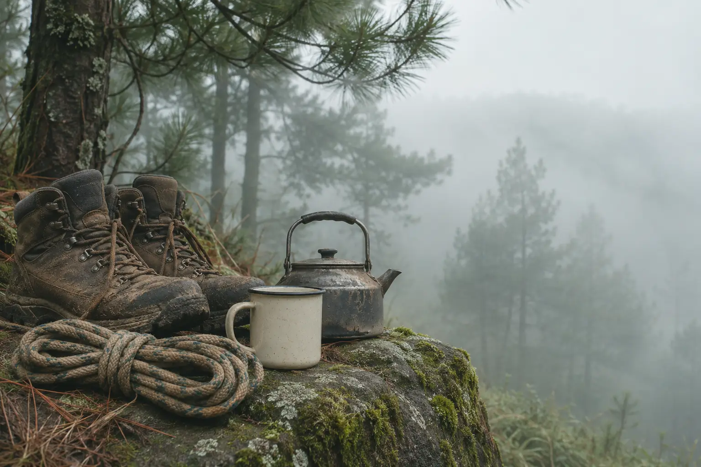

Cerita Toby
Di puncak, yang paling dicari selalu sama: segelas kopi susu hangat dan roti bakar yang masih renyah.
Toby suka naik gunung. Setelah sekian banyak jalur, ia tahu momen terbaik justru datang saat istirahat: duduk, minum yang hangat, dan melihat kabut lewat di bawah kaki.
Toby Cafe dibuat untuk momen itu. Tidak perlu jadi pendaki untuk mampir; cukup datang pagi dan pesan yang hangat. (Cerita contoh untuk demo.)